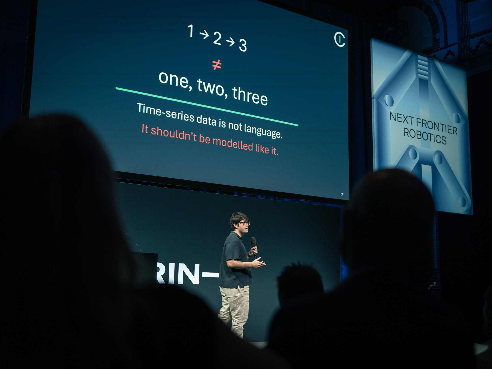

Making Continuous Intelligence a Reality
When I passed my DPhil viva earlier this year, I wrote that it was time to make continuous-time machine learning a reality. A few months later, that ambition has become Continuous Intelligence, a company I co-founded with my close friend AJ Shears. I am incredibly excited to build on my research at Oxford and develop a new generation of AI that can make sense of the time-series data generated by the systems we depend on.
Why Time Series?
Much of my research has come back to a simple question: how should a machine-learning model represent a world that keeps changing? Think about measurements from a patient, sensors on an industrial machine, or demand across an energy network. The values matter, but so does when they were measured, how quickly they changed, and what else was happening at the time. Different measurements arrive at different rates. Some are missing entirely.
We can force this data onto a regular grid, fill in the gaps, and hand it to a model. But those choices change what the model gets to see. A long gap between observations and a period where nothing changed can end up looking very similar. I want models that can work with the observations we actually have, preserving the information in their timing and interactions.
This is what drew me to continuous-time models. Their state can evolve with the data, incorporating new observations as they arrive. The difficulty has been making them efficient enough to train at a useful scale while remaining expressive enough to track complicated systems. My DPhil, including the work on Structured Linear CDEs, focused on bringing those requirements together.
From Research to Something Useful
Proving that a model can represent the functions we need is one part of the problem. Getting it to learn those functions reliably, run quickly, and be useful on someone else's data is a much bigger undertaking. That is the work I want to do next, and why we started Continuous Intelligence.
We are building foundation models specifically for time-series data. The ambition is for a model to maintain an understanding of a system as observations arrive, so that people can ask what is happening, predict what comes next, and use that information to make decisions. There is a lot of research and engineering between that ambition and a model people can depend on. Having a team whose full attention is on that problem makes it possible to tackle both together.
Support from SPRIND
In July, Continuous Intelligence was selected as one of ten teams (from over 500 applications!) for Stage 1 of SPRIND's Next Frontier AI Challenge. We have been awarded €2.3 million in equity-free funding through the programme. The company announcement has the details, but the personal significance is fairly simple: we have the opportunity to make Continuous Intelligence a reality. That means building the team, training at a scale we could not previously reach, and finding out where our approach works and where it needs to improve. I am enormously grateful to SPRIND and the jury for backing us.

In September, I got to share our early progress at SPRIND's AI and Robotics conference in Berlin. This included the news that our first company paper, Time Flies When You Parallelise, had been accepted to NeurIPS 2026. The paper brings us closer to the combination of accuracy and efficiency we need, and the preprint will be available soon. Seeing what the other teams had built, just a couple of months into the programme, left me even more optimistic about the future of AI in the UK and Europe.
Thank you also to Terry Lyons and everyone who made my time at Oxford what it was. Continuous Intelligence grows directly out of that work and those collaborations. I am also very grateful to Blanka Horvath and Hans Bühler for encouraging me to apply to SPRIND and helping me put the application together. I am very excited to be able to continue this journey with Terry, Blanka, and Hans on our scientific advisory group.
If you work with time-series data and would like to talk, get in touch. We are also hiring in London.